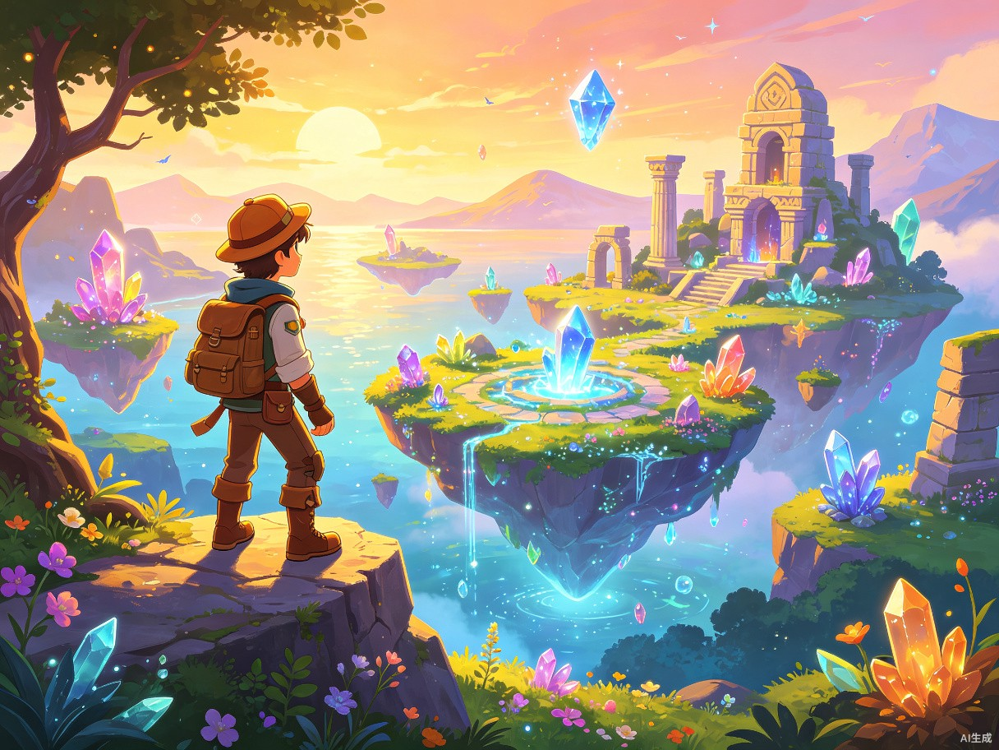
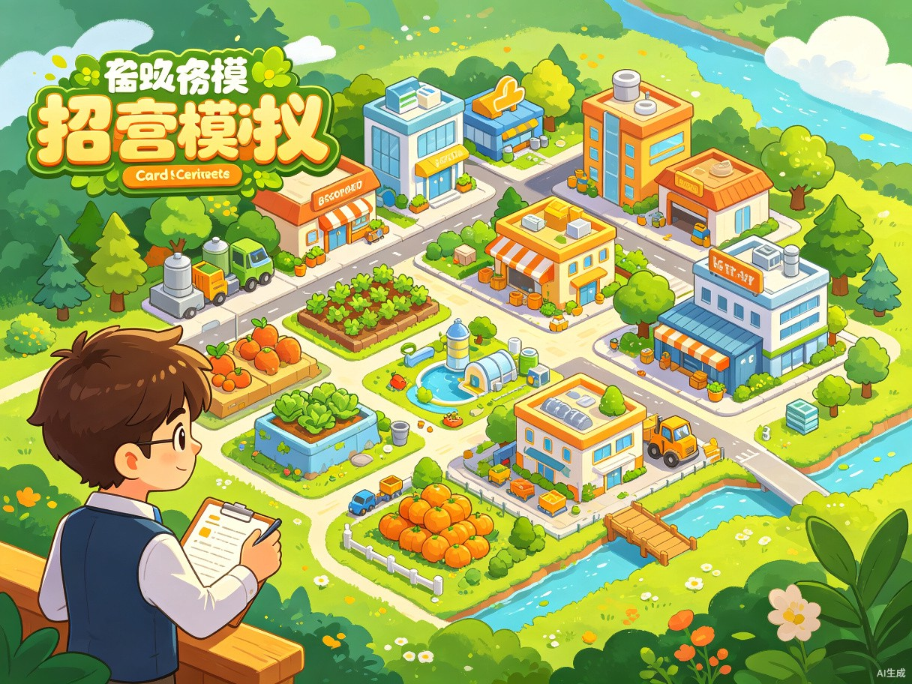
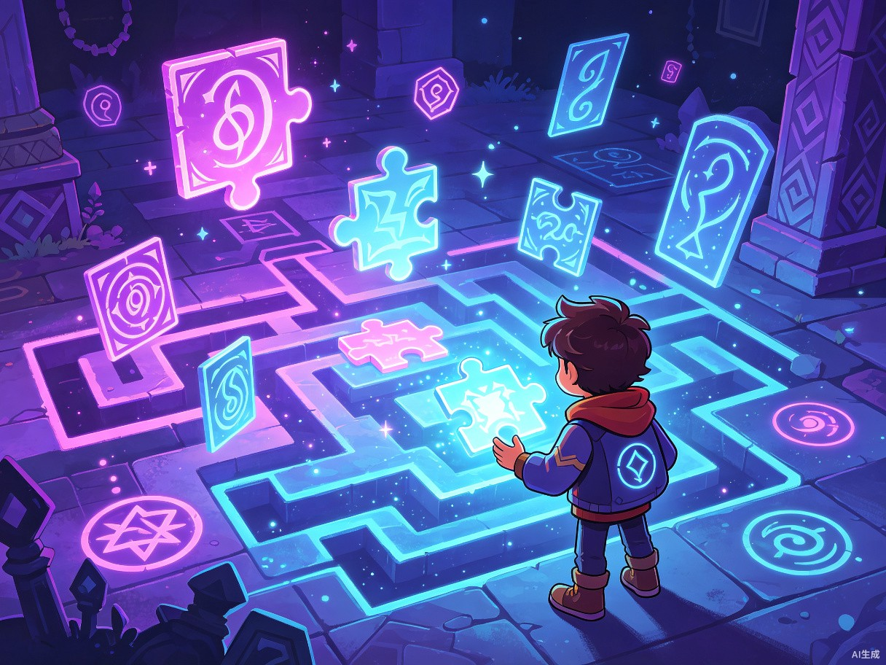
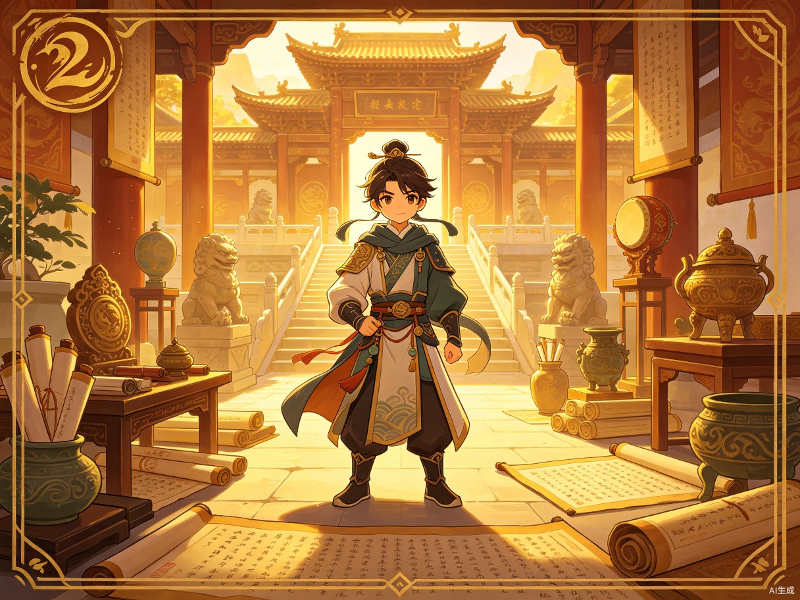

知识不迷路了啊
AI游戏设计与生产平台
01
上传教材
解析中...
02
选择玩法
AI推荐
03
AI工作室
组建团队
04
宇宙铸造
生成游戏
把教材交给你的AI团队
AI将自动解析教材章节，提取知识点，标注公式，为游戏化设计提供精准内容基础
上传文件
PDF/DOCX/TXT
粘贴文本
快速输入内容
网址导入
解析网页内容
示例教材
查看示例
拖拽文件到这里，或点击上传
PDF/DOCX/TXT/MD 最大100MB
上传后AI将为你解析教材内容，预计1-2分钟完成
AI 建议怎么玩？
AI根据教材内容和年龄段，为你推荐最适合的游戏玩法

探索冒险
95%开放世界探索，通过任务解锁知识
适合学科
科学
地理
生物
学习融合
探索生态系统，理解食物链

模拟经营
90%资源管理经营，理解系统与规律
适合学科
数学
经济
科学
学习融合
管理资源，控制变量，掌握模型

解谜闯关
85%挑战式解谜，强化逻辑与应用
适合学科
数学
物理
化学
学习融合
将知识点转化为谜题

角色扮演
80%沉浸式剧情体验，学习历史文化
适合学科
历史
语文
艺术
学习融合
通过角色体验历史事件
你的创意想法（可选）
告诉AI你想要的游戏风格、角色设定、玩法机制，让定制更贴合你的想象